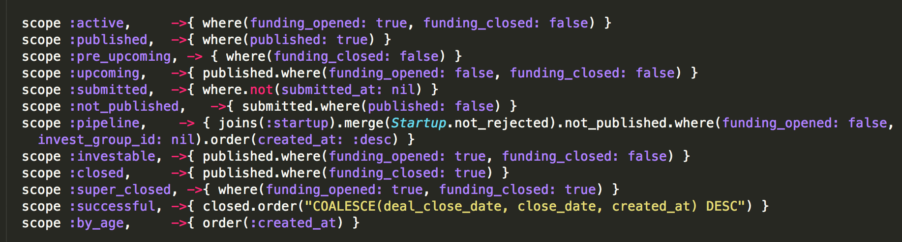
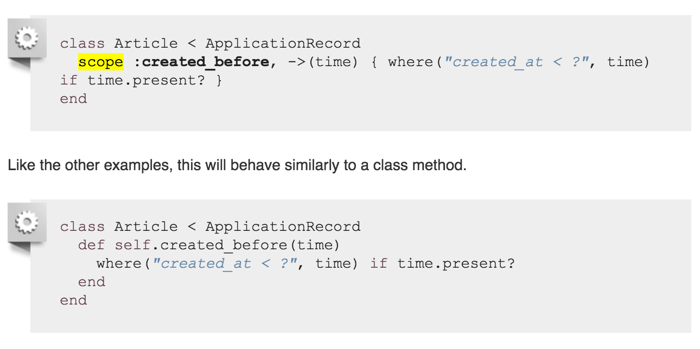
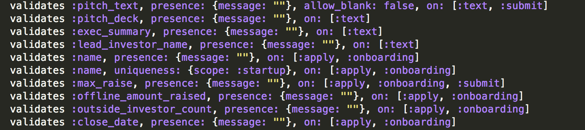
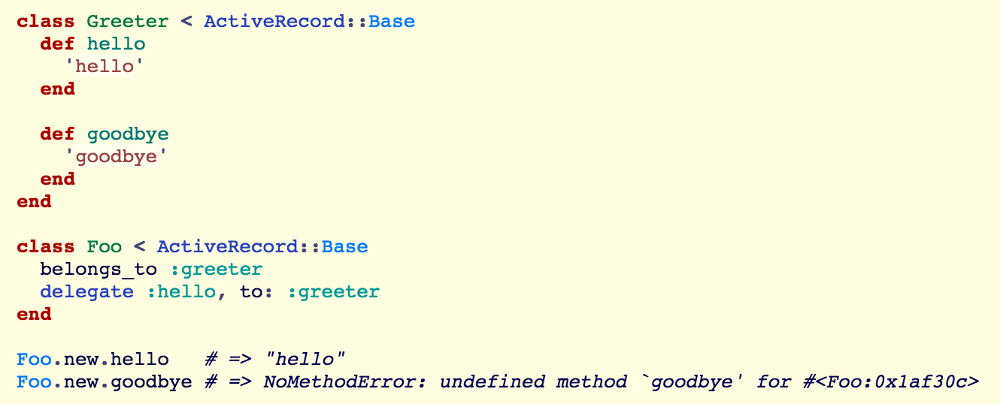
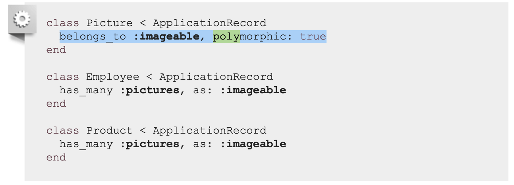

What I've learn about Rails so far II
Sept 26 2015
Scope and Direct Query from PostgreSQL
Scoping allows you to specify commonly-used queries which can be referenced as method calls on the association objects or models(e.g. Article.reviewed) With these scopes, you can use every method previously covered such as where, joins and includes. All scope methods will return an ActiveRecord::Relation object which will allow for further methods - chain (such as other scopes) to be called on it.
When there are boolean data-type attributes, scope gives very easy way of accessing data. e.g. closed -> funding_closed: true. I found that scope could takes lots of efforts if you are not familiar with SQL commands. Let's take a look at scope 'pipeline'.
pipeline -> { joins(:startup).merge(Startup.not_rejected).not_published.where(funding_opened: false, invest_group_id: nil).order(created_at: :desc) }
When you call Deal.pipeline, it will go to Deal's table and find associated Startup(that's essentially what join(:startup) does), and then select Deals that their startup is not rejected and then call .not_published and so on. I've always temped to use scope instead of using method because it is fun to play around. It is compeletely developer's call to use either scope of method.
For instance when you using conditional in the scope, this is unclear which is better approach. One thing I want to remind to use cocnditional scope is that, A scope will always return an ActiveRecord::Relation object, even if the conditional evaluates to false, whereas a class method, will return nil. This can cause NoMethodError when chaining class methods with conditionals, if any of the conditionals return false.
Selective Validation
Rails allow easy validation on attributes in the model. But problem raises when you want to save data from other sources. For instance, you want to allow user to be saved their applications although mandatory fields are NOT all filled. In this case, with partial or selective valication, we can save the application by each step without satisfying all requirements.
In this example, offline_amount_raised and outside_investor_count can be only validated from controller action - apply and onboarding.
Delegate
Delegate provides a delegate class method to easily expose contained objects’ public methods as your own.
Delegate is very useful with ActiveRecord Association. Let's take look at a simple example.
polymorphic associations (as: :nick_name )
With polymorphic associations, a model can belong to more than one other model (as: ), on a single association.
To retrive pictures, @employee.pictures or @product.pictures. To retrive who own the picture, it should be @picture.imageable. @picture.employee or @picture.product will throw invalid error.